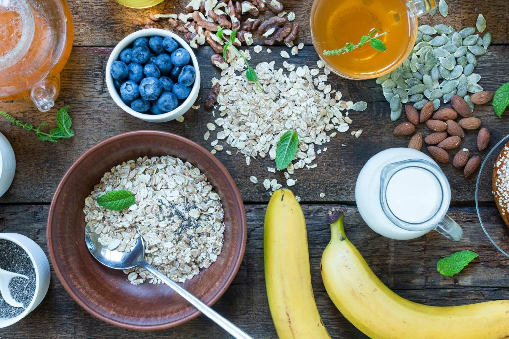

The Importance of Living a Healthy Lifestyle
Living a healthy lifestyle is important for anyone who wants to feel their best and stay healthier as they get older. However, we are presented with such a huge amount of advice every day it can be confusing to work out what is best when it comes to health, and preventative healthcare can be a baffling topic.Different messages are conveyed about wellbeing and figuring out what advice to follow can be a struggle. But living a healthy lifestyle doesn’t need to be complicated.
Read more